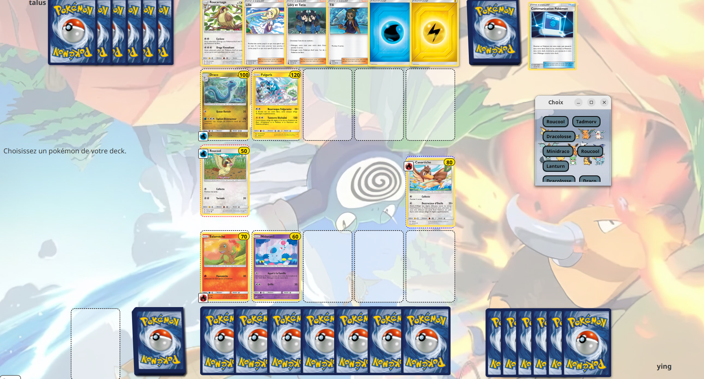

Pokémon TCG
Projet universitaire – SAE 2.01

Pokémon TCG
Projet universitaire divisé en deux parties : la partie "invisible" (logique, POO) et la partie IHM (interface graphique).
Contexte
Dans le cadre d'un projet de l'IUT, le but était de développer une version alternative du jeu Pokémon Trading Card Game (TCG).
Le projet, qui s'étendait sur deux mois et demi et était divisé en deux parties :
La première partie (un mois et demi) consistait en l'implémentation de la logique du jeu en suivant une architecture de code précise et en respectant les principes de la programmation orientée objet (POO) avec Java.
La deuxième partie (un mois) consistait à implémenter une interface graphique en JavaFX à partir d’un code déjà existant.
Contribution personnelle
Partie 1: Implémentation de la logique du Jeu
- Implémenter le système d'attaques
- Gérer les états spéciaux (comme la brûlure)
- Gérer les talents propres à chaque Pokémon
- Gérer les cartes Dresseur
- Implémenter le système d’énergie
- Gérer la fin d'une partie et récupération des cartes Récompense
Partie 2: Interface graphique (IHM)
- Implémenter les cartes Récompense
- Implémenter le système d'attaques
- Page de début et fin de partie
Ce que j'ai appris...
- Répartir les tâches efficacement
- Coder proprement en respectant la POO
- Consolider les compétences en Java et JavaFX